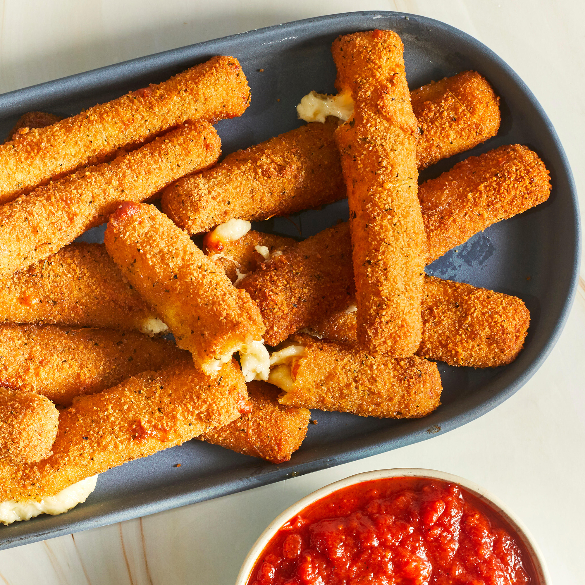

Cheese Sticks

Golden and crispy on the outside, melted and gooey in the inside
One of the most popular finger foods. Craved by everyone of all ages.
Ingredients
- 2 pcs - Eggs, beaten
- 1/4 cup - Water
- 1 1/2 cups - Bread crumbs
- 1/2 tsp - Garlic salt
- 2/3 cup - All-purpose flour
- 1/3 cup - Cornstarch
- 1 qt - Oil
- 16 oz - Mozzarella sticks
Steps
- In a small bowl, mix the eggs and water.
- Mix the bread crumbs and garlic salt in a medium bowl.
- In a separate medium bowl, blend the flour and cornstarch.
-
In a large heavy saucepan, heat the oil to 365 degrees F (185 degrees
C).
-
One at a time, coat each mozzarella stick in the flour mixture, then the
egg mixture, then in the bread crumbs and finally into the oil.
-
Fry until golden brown, about 30 seconds. Remove from heat and drain on
paper towels.